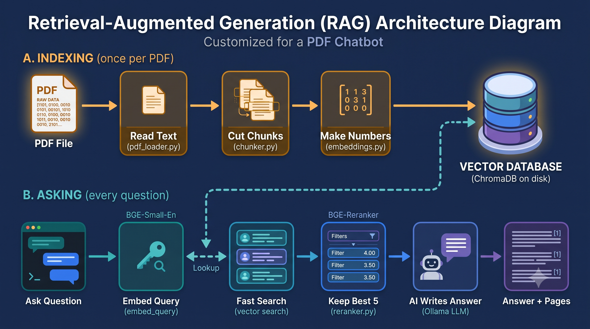

Start here: the learning path
Do not begin by memorising filenames. Learn the idea first, then watch the two code paths, then use the file reference to zoom in. This project has two separate moments: ingestion happens when a PDF is uploaded, while question answering happens every time you type a question.
Understand RAG
Retrieval-Augmented Generation means: find relevant passages first, then ask an LLM to answer using those passages.
Separate the two timelines
Upload time creates searchable knowledge. Chat time searches that knowledge and creates a grounded response. The PDF is not reread for every question.
Follow the data, not just the files
Track the same information changing shape: bytes → pages → chunks → vectors → retrieved chunks → prompt → streamed answer.
Read the conductor last
After you know the parts, read rag_pipeline.py and app.py. One orchestrates the work; the other handles the screen and user actions.
1. RAG in one minute
Picture a personal digital librarian. You give it a pile of PDFs. It reads every page and files each paragraph on shelves arranged by meaning, not by alphabet. When you ask a question, it walks to the right shelves, pulls out the few most relevant paragraphs, and writes an answer using only those paragraphs, adding footnotes such as "[1] report.pdf, page 7".

Private and local
Everything runs on your own computer. No document is uploaded to an online AI service and no API key is needed.
Every answer is checkable
The chatbot shows which file and page each fact came from, so you can open the PDF and verify it.
Honest about gaps
If your documents don't contain the answer, it replies "I couldn't find the answer" instead of inventing one.
2. RAG concepts, from simple to technical
The problem
An AI language model (an LLM) is like a brilliant writer who has read a huge part of the internet but has never seen your PDFs. If you ask about your company's leave policy, it can't know the answer. Worse, it often produces a confident, fluent, completely invented reply. This is called a hallucination.
The idea behind RAG
RAG = Retrieval-Augmented Generation. Think of an open-book exam. A student who memorized nothing can still score well if allowed to look up the right page first. RAG does the same for the AI in two moves:
① Retrieve
Search your documents and find the few paragraphs most related to the question. This is a smart search step. No writing yet.
② Generate
Give the LLM those paragraphs together with the question and say "answer using only this". This is the writing step.
"Augmented" means the AI's knowledge is boosted by extra material you supply at the moment of asking. The AI itself is never retrained. It reads fresh pages every time.
Why not paste the whole PDF into the AI?
An LLM can only read a limited amount of text at once (its "context window"; this project sets it to 8192 tokens, roughly 6,000 words). A 200-page PDF won't fit, and reading more text is slower. RAG sends only the best 5 paragraphs, so it is faster and more focused.
The whole project in one animated picture
Watch the dots: the top row happens once per PDF (building the library). The bottom row happens every time you ask. The database in the middle connects them.
3. Project map: what the folder contains
The project root is chatbot-task/pdf chatbot/. Read the
folders from the outside inward: the root launches the app, src/
contains reusable logic, scripts/ contains command-line
tools, tests/ proves behavior, and data/
contains the local ChromaDB index created while the app runs.
Root files: app.py, pyproject.toml, requirements.txt
app.py is the Streamlit interface and entry point. pyproject.toml declares the package metadata, Python 3.12 requirement, pytest configuration, source path, and test markers. requirements.txt installs runtime and test libraries such as Streamlit, PyMuPDF, ChromaDB, sentence-transformers, Ollama, and pytest.
src/pdf_chatbot/: the reusable application engine
These modules implement settings, PDF reading, chunking, embeddings, vector storage, reranking, prompts, Ollama communication, shared data records, errors, and the orchestration pipeline. Keeping them outside app.py makes the core testable without opening a browser.
scripts/: manual inspection and setup tools
verify_setup.py checks the local installation and models; chat_cli.py provides a terminal chat; inspect_pdf.py shows extracted pages/chunks; search_pdf.py shows raw vector-search matches. These are debugging windows into the same engine, not separate chatbot implementations.
tests/: executable explanations of behavior
The tests cover the UI helpers, configuration validation, PDF edge cases, chunk boundaries, model records, embeddings/LLM adapters, prompt construction, vector storage, reranking, and end-to-end pipeline behavior. test_llm_live.py is the exception: it needs a running Ollama model.
data/: local runtime state, not source code
data/chroma_db/ is the persistent vector database. It stores chunk text, embeddings, IDs, and metadata so a restart does not require re-indexing every PDF. It is generated state; the Python source explains how to recreate it.
Core concepts you will see in the code
Six ideas make RAG work. Each one below says what it is, why it's needed, how it works and where it lives in this project.
3.1 Large Language Model (LLM): the writer llm.py
An LLM is a program trained on enormous amounts of text. Its core skill is predicting a sensible next word, again and again, which produces whole sentences and answers.
qwen3:4b-instruct, a small model (4 billion
parameters) that runs on an ordinary computer through the free app
Ollama.
3.2 Embeddings: turning meaning into numbers embeddings.py
Computers can't compare "meaning" directly, but they are excellent at comparing numbers. An embedding model reads a piece of text and outputs a long list of numbers (here, 384) that acts like a coordinate on a "map of meaning". Texts that mean similar things get nearby coordinates, even with different words: "annual leave" and "vacation days" sit close together, while "server password" sits far away.
BAAI/bge-small-en-v1.5. It was trained to
expect a special instruction in front of questions only,
so the code adds
"Represent this sentence for searching relevant passages:
"
to questions but not to chunks.
3.3 Chunking: cutting text into index cards chunker.py
One page often covers several topics, so its single meaning-point is a blurry average. Smaller pieces have a sharp meaning and match questions better. So each page is cut into chunks of up to 1000 characters (about one or two paragraphs).
The orange strips show the overlap: the last ~150 characters of one chunk are repeated at the start of the next.
3.4 Vector store: the searchable filing cabinet vector_store.py
A vector store saves each chunk's text together with its number list and a label (file name, page). Its special skill: given the number list of a question, it quickly returns the stored entries that are closest on the meaning map.
data/chroma_db. No
separate server is needed.
3.5 Reranker: the careful second opinion reranker.py
The embedding search is fast but shallow, because it compares the question and each chunk separately. A chunk that just shares words like "days" can outrank the one that truly answers. A reranker (a cross-encoder) reads the question and a chunk together and gives a direct score for "does this answer that?". It is more accurate but slower, so it only examines the 10 candidates from the fast search and keeps the best 5.
BAAI/bge-reranker-base. Set
RERANKER_MODEL=none to skip it for speed.
3.6 Prompt: the written briefing prompts.py
The prompt is the exact text sent to the LLM. It is the "augmented" part of RAG. Here it contains (1) strict rules, (2) the last three question/answer pairs, so follow-ups like "what about page 5?" make sense, and (3) the five numbered sources plus your question.
Sources:
<source id="1" file="handbook.pdf" page="12"> ...chunk text... </source>
<source id="2" file="handbook.pdf" page="13"> ...chunk text... </source>
Question: How many vacation days do I get?[1], and use one fixed "not found" sentence when
nothing fits. Text inside <source> tags is
declared to be data, never commands, which defends against a PDF
that says "ignore your instructions".
4. Step-by-step technical architecture
Click any step, or just watch: the highlight moves through what happens when you ask a question. The table below it covers the full journey, including the upload.
Your question arrives. app.py collects it, the
ticked documents, and recent chat history.
Question becomes numbers. embed_query() adds
BGE's prefix and produces 384 numbers.
Fast search. ChromaDB returns the 10 nearest chunks. For follow-ups it also searches "previous question + this one".
Rerank. The cross-encoder scores each question+chunk pair and keeps the best 5.
Build the prompt. Rules + history + numbered sources + question are assembled.
The LLM writes. Ollama streams the answer word by word, and the app shows citations and source snippets.
Full journey: upload to answer
| Code execution step | What it does technically | What it means in plain English |
|---|---|---|
1. Uploadapp.py: process_uploads |
Streamlit hands over the PDF as bytes. A key (name+size+id) prevents handling the same upload twice in a session. | You drop a file in the sidebar; the app notes it as received. |
2. Duplicate checkingest_pdf |
Computes a SHA-256 hash of the bytes and asks ChromaDB if it exists. | A fingerprint of the file. Same contents, even renamed, means it's already on the shelf. |
3. Validate and readload_pdf |
Checks extension, size (max 50 MB),
%PDF- signature, corruption, password. PyMuPDF
extracts text per page as paragraph blocks. Pages under 20
characters are skipped.
|
The librarian checks the book is real, undamaged and unlocked, then copies out the text. Scanned images of text can't be read. |
4. Chunkchunk_document |
Splits each page into pieces up to 1000 characters with 150-character overlap, tagged with file, page and index. | Pages become labeled index cards. |
5. Embed chunksembed_documents |
The BGE model converts chunks into 384-number vectors, 32 at a time, on the CPU. | Every card gets a meaning fingerprint. |
6. Storeadd_chunks |
Upserts vector, text and metadata into ChromaDB using IDs built from the file hash. | Cards are filed. Filing the same card twice replaces it, and it survives restarts. |
7. Askanswer() |
Gathers selected documents and history, calls
answer_question.
|
You type a question and pick where to look. |
8. Embed questionembed_query |
Prefix + question becomes a vector. | The question gets its own fingerprint. |
9. Vector searchstore.search |
Top 10 by cosine similarity, optionally filtered to ticked PDFs. | Grab the 10 cards closest in meaning. |
10. Rerankreranker.rerank |
Cross-encoder keeps the best 5. The bare question's top match is guaranteed a slot so a topic change isn't lost. | A careful second reader re-sorts the pile. |
11. Build promptbuild_messages |
System rules, last 3 Q&A pairs, numbered sources, question. | A briefing note for the writer. |
12. Generatestream_chat |
Sends it to local Ollama (temperature 0.1, 8192-token window) and streams tokens back. | The writer composes; you watch it appear. |
13. Displayapp.py |
Streams text, finds [n] citations, shows a Sources
panel with file, page, relevance and a snippet.
|
You get an answer with checkable footnotes. |
5. Watch one PDF travel through the code
Press Play to follow the upload path. The PDF is not sent to every file: each module receives a different representation of it, such as bytes, extracted text, chunks, or vectors. Select a stage to inspect the important variables and functions involved.
upload
ingest
text
pieces
vectors
ChromaDB
question
rerank
briefing
answer
app.py
The interface receives the uploaded PDF and starts ingestion.
What arrives hereUploadedFile: name, size, and bytes
Select a stage to see what each item means.
6. A worked example
This is an illustration (the numbers are made up) of one
question travelling through the system. Suppose you uploaded
handbook.pdf.
Indexing
Page 12 says: "Full-time staff receive 24 days of paid annual leave per year." The chunker keeps it as a chunk labeled handbook.pdf, page 12, chunk 0. The embedder turns it into 384 numbers. ChromaDB stores text, numbers and label.
Asking
You type: "How many vacation days do I get?" No word matches "annual leave", but the meaning-numbers are close, so the page-12 chunk lands in the top 10.
Reranking
Another chunk about "working days in a month" shares the word "days" and ranks high in search. The reranker sees it doesn't answer the question and moves page 12 to first place.
Generating
The LLM reads the five sources and replies: "Full-time staff receive 24 days of paid annual leave per year [1]." The Sources panel shows handbook.pdf, page 12 and marks [1] as cited.
retrieve() also
searches with the previous question prepended, keeps each chunk's best
score, and reranks against the combined query. This is how the bot
resolves words like "it" and "that".
7. File and code reference
| Library | Job | Why it's here |
|---|---|---|
| Streamlit | Builds the web page from Python | Chat box, sidebar, upload button with no HTML or JavaScript. |
| PyMuPDF | Extracts text with page numbers | Fast, and reads from in-memory bytes like uploads. |
| sentence-transformers, torch | Run the embedding and reranker models | Meaning-numbers and relevance scores on a normal CPU. |
| ChromaDB | Stores and searches vectors | Server-free, saves to disk. |
| ollama, httpx | Talk to the local LLM | Send prompts, receive streamed text, catch timeouts. |
| python-dotenv | Reads optional .env |
Change settings without editing code. |
Where the code lives
Use this as a reference after watching the flow. Each row answers three questions: what enters the function, what it changes, and what comes out. Private helpers with a leading underscore are implementation details called by the public functions above them.
| File / symbol | Purpose | Input → output |
|---|---|---|
app.pyprocess_uploads, answer |
Connects widgets to the pipeline, keeps session state, streams text, and renders citations. | Streamlit files/questions → UI notices, chat messages, source panels. |
config.pySettings, load_settings |
Owns every tunable value and validates environment overrides. | Defaults + .env + environment → immutable settings. |
pdf_loader.pyload_pdf, extract_page_text |
Rejects invalid/encrypted/scanned PDFs and extracts readable page paragraphs. | PDF bytes → LoadedDocument containing PageText. |
chunker.pychunk_document, chunk_text |
Creates small searchable pieces without losing page identity or boundary context. | Pages → overlapping Chunk records. |
embeddings.pyembed_documents, embed_query |
Uses BGE to represent text as normalized meaning vectors; query and document prefixes differ. | Text → 384-number vectors. |
vector_store.pyadd_chunks, search |
Persists vectors in ChromaDB and converts nearest-neighbor results back into source-aware objects. | Chunks/vectors/question → disk records or RetrievedChunk. |
reranker.pyReranker.rerank |
Reads each question/chunk pair together for a more accurate final order. | Question + ~10 candidates → best top_k candidates with scores. |
prompts.pybuild_messages, format_sources |
Numbers sources, trims history, and gives the LLM grounding/citation rules. | Rules + history + retrieved chunks + question → chat messages. |
llm.pyOllamaLLM.stream_chat |
Checks Ollama and translates streamed model output/errors into app-specific behavior. | Messages → answer text pieces. |
rag_pipeline.pyRAGPipeline.ingest_pdf, answer_question |
Coordinates the complete upload and question workflows; cleans up partial writes and supports dependency injection in tests. | Bytes or question → IngestResult or StreamingAnswer. |
models.pyPageText, Chunk, Answer |
Defines immutable data contracts so source/page metadata survives every handoff. | Validated fields → typed records and citation helpers. |
exceptions.pyPDFChatbotError |
Separates technical detail for logs/tests from friendly user_message text for the UI. |
Failure detail → catchable, understandable error. |
app.py interface
What: the Streamlit page.
Why it's careful: Streamlit re-runs the whole script on
every click, so the heavy pipeline is created once with
@st.cache_resource, and chat history is kept in
st.session_state. It contains no AI logic.
@st.cache_resource
def get_pipeline():
return RAGPipeline(load_settings())config.py settings
What: one Settings object with every number
(chunk size 1000, overlap 150, top_k 5, models).
How: defaults, then .env, then real
environment variables. Invalid values raise a clear
ConfigError.
pdf_loader.py reading
What: validates and reads the PDF. Why blocks: PDFs store positioned lines, not sentences, so it reads paragraph blocks, joins their lines and repairs hyphenated words.
page.get_text("blocks", sort=True)chunker.py cutting
How: _split breaks text at paragraph, then
sentence, then word boundaries. _merge packs pieces
up to the size limit and starts each new chunk with an overlap
tail from the previous one.
embeddings.py numbers
What: Embedder with
embed_documents (no prefix) and
embed_query (with prefix). It loads the model from
local files first and caches it, because loading takes seconds.
vector_store.py database
How: PersistentClient saves to disk;
upsert with hash-based IDs avoids duplicates; a
where filter limits search to ticked PDFs; score = 1
− cosine distance.
collection.query(
query_embeddings=[vec], n_results=10)reranker.py re-sorting
How: builds (question, chunk) pairs, calls the
cross-encoder's predict, sorts by score, returns the
best top_k.
prompts.py instructions
What: the system rules, the fixed "not found" sentence, and the functions that number the sources and trim history to the last 3 turns.
llm.py writer
How: stream_chat uses
stream=True so text appears gradually (CPU answers
can take 10-30 s). think=False asks for the answer
without the model's reasoning. check_ready() turns
"Ollama not running" into a friendly message.
rag_pipeline.py conductor
What: RAGPipeline ties it all together.
ingest_pdf() = hash, load, chunk, store (cleaning up
if storing fails). answer_question() = retrieve,
build prompt, stream. Parts can be swapped for fakes in tests.
models.py, exceptions.py shared
Small immutable records (Chunk,
RetrievedChunk, Answer) carry file and
page through every step, which makes citations possible. Each
error type holds a plain-English user_message.
scripts/ and tests/ tools
verify_setup.py checks your install.
chat_cli.py chats in the terminal.
inspect_pdf.py shows extracted text and chunks.
search_pdf.py shows raw search hits.
tests/ is a pytest suite using in-memory PDFs.
8. Run, test, and troubleshoot
-
Install Python 3.12 (the project requires 3.12.x). Check:
python --version -
Get the code.
git clone https://github.com/KrishnaPankhania06/chatbot-task.git cd "chatbot-task/pdf chatbot" -
Create a virtual environment (an isolated box for this
project's packages).
python -m venv .venv .\.venv\Scripts\Activate.ps1 # macOS/Linux: source .venv/bin/activate -
Install dependencies. This is a large download because of
PyTorch.
python -m pip install -r requirements.txt -
Install Ollama from
ollama.com, start it, then download
the language model:
ollama pull qwen3:4b-instruct -
(Optional) environment variables. Create a file named
.envnext toapp.py. Every value has a default, so skip this unless you want changes. The code mentions a.env.example, but the repository doesn't contain one.LLM_MODEL=qwen3:4b-instruct TOP_K=5 CHUNK_SIZE=1000 RERANKER_MODEL=none # faster, slightly less accurate OLLAMA_HOST=http://localhost:11434 -
(Recommended) verify the setup. Internet is needed once,
because the embedding and reranker models download from Hugging Face
on first use.
python scripts/verify_setup.py -
Start the app.
It opens atstreamlit run app.pyhttp://localhost:8501. The first start can take a minute or two. - Use it. Upload PDFs in the sidebar, wait for the "chunks from pages" message, tick the documents to search, and ask. Open Sources under an answer to check the pages.
-
(Optional) run the tests.
python -m pytest -m "not model and not ollama"
Troubleshooting
| Message | Fix |
|---|---|
| Cannot reach Ollama | Start the Ollama app and wait up to 20 seconds. |
| Model is not installed | Run ollama pull qwen3:4b-instruct. |
| No text / scanned PDF | The app has no OCR and can't read images of text. Use a PDF with selectable text. |
| Slow answers |
Normal on CPU. Try RERANKER_MODEL=none, fewer
documents, or a smaller model.
|